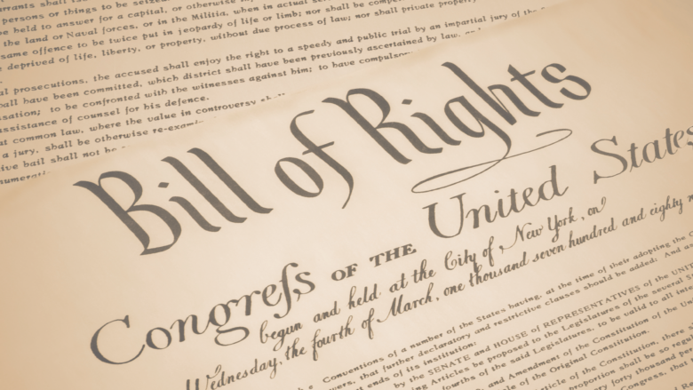
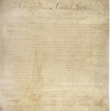

Rights are freedoms and expectations about what a person can do, should be protected from, or is owed.
Why are they Important
Rights are important because they help make sure that our government can't get too powerful.
How are rights protected?

Rights are protected by the US constitution. This document was passed in 1791 and was called the Bill of Rights, this established many of the rights that we have today.
How the Constitution Protects the Right to Due Process

The constitution states “No state shall make or enforce any law which shall abridge the privileges or immunities of citizens of the United States; nor shall any state deprive any person of life, liberty, or property, without due process of law; nor deny to any person within its jurisdiction the equal protection of the laws.”
–US Constitution
This means that a state can not make a law that violates the rights of citizens or make a law that takes away life liberty or property without a fair trial or deny a person the protection of the laws.
How are Rights Complicated?
The right to due process is complicated because someone can be found guilty even though they are innocent.
It is also complicated because it is a very long process and sometimes can be traumatizing for a muder victim’s family and the person can still be found innocent.
Rights are a power or a privilege that can be easily violated by the government, which is impenetrable.